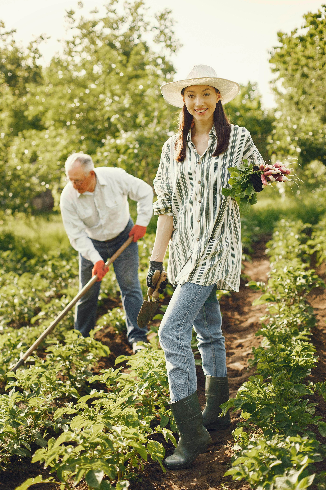

Hello! We are Sprout & Grow

Sprout & Grow was founded in 2010 by gardeners who shared a dream of bringing high-quality organic plants to the community...From the very beginning, the founders were committed to sustainable, transparent practices—sourcing the finest organic seeds and using eco-friendly growing methods.
Sprout & Grow has grown into a trusted local destination, offering hundreds of plant varieties, hands-on workshops, and personalized gardening support.
Our Mission
 At Sprout & Grow, we believe gardening should be for everyone, no experience needed!
At Sprout & Grow, we believe gardening should be for everyone, no experience needed!
We are here to help you take that first step into the world of gardening with confidence & guidance. Whether you're just getting started or looking to expand your garden, we're here with the plants, knowledge, and support to help you every step of the way
Our Team
 Our team is made up of passionate plant lovers and organic gardening enthusiasts who are always happy to help. Whether you visit us in store or reach out online, we're here to make sure you feel welcome and supported every step of the way
Our team is made up of passionate plant lovers and organic gardening enthusiasts who are always happy to help. Whether you visit us in store or reach out online, we're here to make sure you feel welcome and supported every step of the way
Have Questions?
We'd love to hear from you! Feel free to reach out on our socials and a member of our team will get back to you as soon as possible!